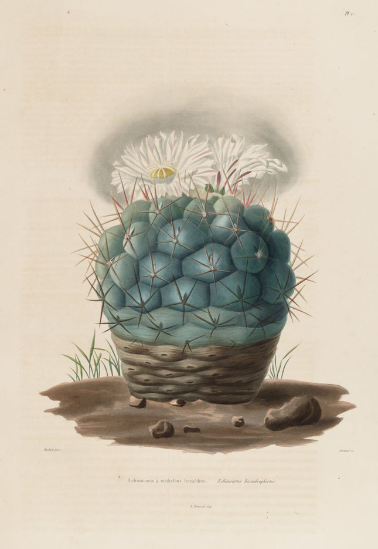

The genus
Thelocactus Britton & Rose, Bull. Torrey Bot. Club 49: 251 (Aug. 1922).
Basionym: Echinocactus subg. Thelocactus K. Schum., Gesamtbeschr. Kakt.: 429. 15 Apr
1898.
Type: Echinocactus hexaedrophorus Lemaire.
Synonyms: Thelomastus Frič, in Kreuzinger, Verzeichnis 10 (1935), nom. illeg.
Torreycactus Doweld, Sukkulenty 1: 19 (1998).
Stem single or clustering, depressed, globose, ovoidal or cylindrical, 3-40 cm
tall, 2-20 cm wide. Ribs distinct or indistinct.
Tubercles present, rounded to conical. Areoles at
the apices of tubercles, sometimes elongated into a short groove, with or without glands.
Spines usually straight, variable in diameter, length and colour; radial and
central spines generally distinguishable. Flowers apical, funnel-shaped, with a
scaled ovary and tube, white, yellow, magenta or rarely orange to red.
Fruits greenish to reddish, with the perianth remnants persistent, scaly,
dehiscing at maturity by a basal pore. Seeds pyriform, with a basal hilum,
black; testa cells tabular, convex or conical, outer periclinal wall with a verrucose microrelief or
smooth.

The neotype of Echinocactus hexaedrophorus Lemaire
From: C. Lemaire, Iconographie descriptive des Cactees, Plate 2 (Dec. 1841).
Image courtesy Missouri Botanical Garden.
Botanicus Digital Library